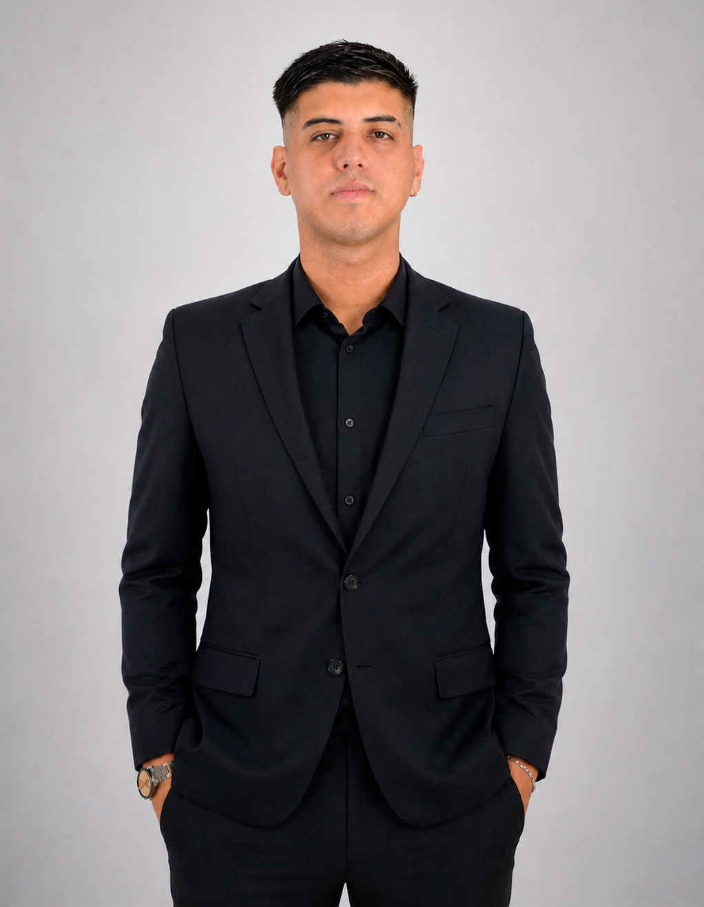
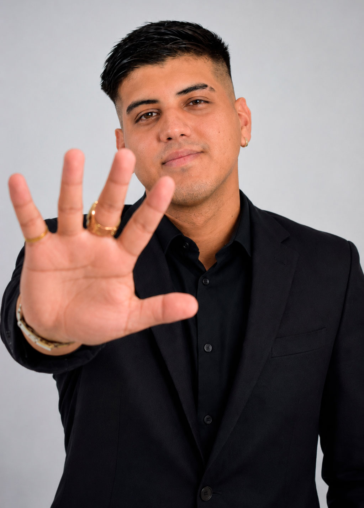

Digital House
Primer curso importante, primer diploma y el empujón que confirmó que la programación era mi camino.
Portfolio 2026 · Argentina
Técnico Superior en Desarrollo de Software y desarrollador Full Stack. Hace 5 años trabajo creando soluciones web para empresas nacionales con varias sucursales, mezclando front, back, datos y mucho mundo real.

Empecé a programar a los 16. A los 18 entré a Casino Club S.A. como Front End. Hoy trabajo como Full Stack, con foco en JavaScript, PHP, SQL y soluciones que se usan de verdad.
Sobre mí
Mi camino empezó en la secundaria, cuando mi director vio facilidad y talento en mí para la programación y me consiguió un curso exclusivo en Digital House. Ese fue mi primer diploma, pero también el punto de partida de una idea que me tomó bastante fuerte: quería ser programador.
Me dediqué a ir al colegio, volver a casa y seguir estudiando. Con el tiempo esa constancia se transformó en trabajo real: landings, formularios, dashboards, campañas, bases de datos, integraciones y herramientas internas.
Soy de Capital Federal, argentino y de Racing. Por eso este portfolio tiene algo de celeste y blanco: no como decoración, sino como parte de mi identidad.
Formación principal
IFTS 18 · Recibido en junio de 2026
Este título es una parte muy importante de mi recorrido. Me formé mientras trabajaba en proyectos reales, combinando la base académica con problemas concretos de producción, clientes internos, datos, campañas y sistemas funcionando todos los días.
Todavía no tengo el título físico porque me recibí hace muy poco, pero ya completé la carrera. Mi idea es seguir creciendo: tengo decidido avanzar hacia la licenciatura y, en el camino, seguir sumando cursos cortos y certificaciones que me mantengan en movimiento.
Experiencia
Primer curso importante, primer diploma y el empujón que confirmó que la programación era mi camino.
Ingreso como Front End en la mayor cadena de casinos de Argentina, trabajando sobre necesidades reales de marketing, operación y comunicación.
Interfaces, formularios, sesiones, APIs, reportes, SQL, administración de registros, mantenimiento y mejoras sobre sistemas ya publicados.
Recibido como Técnico Superior en Desarrollo de Software, con ganas de seguir estudiando y proyectando la licenciatura.

Forma de trabajar
Trabajo en colaboración con community managers, diseñadores gráficos y otros equipos. Me gusta entender el problema antes de escribir código, cuidar los detalles visuales y dejar todo lo más claro posible para poder mantenerlo después.
Stack
HTML, CSS, JavaScript, React, responsive design, animaciones simples y componentes reutilizables.
PHP, Node.js, lógica de formularios, validaciones, sesiones, consumo de APIs y manejo de JSON.
SQL, MySQL/MariaDB, consultas, reportes, migraciones, backups, limpieza y mantenimiento de datos.
Landings, dashboards, sistemas internos, reportes, automatizaciones y soporte a campañas digitales.
Certificados
Acá podés dejar tus certificados. Hacé click en cualquiera para abrirlo en grande. Para agregar más, solo duplicás una tarjeta y cambiás la imagen.
Proyectos
Dejé un listado editable para que puedas sumar todas las páginas que quieras. Si el sitio permite vista previa, podés usar el botón de previsualizar.
Contacto
Si querés hablar de una web, una herramienta interna, una landing o simplemente conectar, escribime.